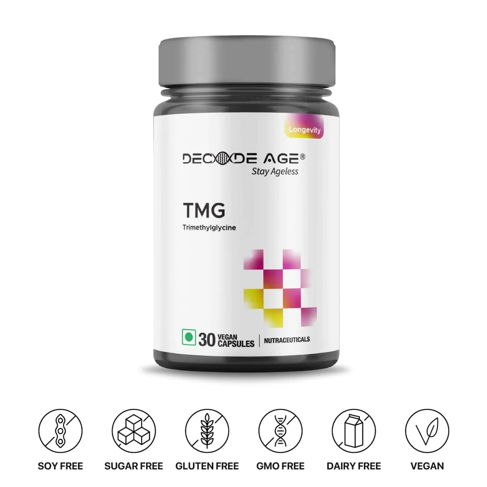

TMG (Trimethyl glycine) 98% Pure - 500mg, 30 Vegan Capsules
₹900 INR
₹1,000.00 INRs
Tax included. Shipping calculated at checkout.
Description
Decode Age's 98% Trimethylglycine (TMG) supplement is a scientifically backed supplement to help reduce your homocysteine levels and improve your NAD+ levels. This supplement supports your heart health.
Benifits
✔ Advanced Methylation Support
✔ Cardiovascular Health Boost
✔ Liver Detoxification
✔ Anti-Ageing
✔ Elevated Athletic Performance
✔ Digestive Health
✔ Salivary Support
✔ Synergic Potency with NAD+ Booster
EXTRA PERKS WHEN YOU SUBSCRIBE
✔ Discounts up to 40%.
✔ First access to new products and promotions.
✔ Priority customer service.
✔ Guaranteed availability, never run out of your essential health products.
Know more...
₹900.00
₹810.00
Buy it with